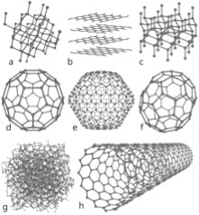
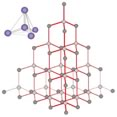
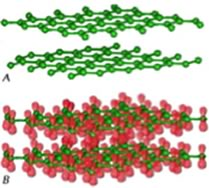

| Chapter 3.3: Carbon
- an amazingly allotropic element |
|
In order to give you an idea of some of the different types of bonds that form between elements we are going to consider several representative elements from different areas of the periodic table. For starters, let us take a look at carbon. Carbon (C) belongs to the family of elements known as non-metals. The bonding between C atoms (and to other types of atoms) is typically described using the covalent bonding model. Each bond involves two electrons (one from each of the bonded atoms). |
3.1 Elements & Bonding |
|
| In addition, when diamond is melted it decomposes. If it is heated in an atmosphere of oxygen it will react to produce carbon dioxide; if oxygen is absent it will transform into graphite - another allotrope of carbon (see below). There is no such thing as molten diamond. Diamonds are extremely hard (the hardest naturally occurring substance) and do not conduct electricity at all (to conduct electricity, electrons must be able to flow through the material). This suggests that the molecular level structure of diamond is quite different from that found in metals (which as we will see are malleable and conduct electricity). Any useful model of diamond’s structure must explain how these properties arise from atomic interactions. |  |
Let us step back and look at the properties of diamond and see if we can make sense of them. Since diamond is so stable (chemically inert), it must have very strong bonds that take a lot of energy to break. Since it doesn’t conduct electricity the electrons must not be free to move around within a diamond. A polished diamond is sparkly because some light is reflected from the surface and some light passes through it - making it transparent. If the diamond were not cut with so many facets it would allow most light to pass through it. |
| Each of these corner atoms is itself at the center of a similar tetrahedron of carbons. Experimental evidence indicates that all the bonds, bond lengths, and bond angles in diamond are identical, the C–C–C bond angles are ~109º. A diamond can be considered as one huge molecule connected by a network of carbon-carbon bonds. |  |
How do we explain this arrangement in terms of what we know about the electronic structure of carbon atoms? The answer is that the electronic structure of the carbon atoms is reorganized to form molecular orbitals. In the case of carbon, each atom can form four bonding molecular orbitals that are oriented as far apart as possible. There are several models to explain how this occurs, but it is important to remember that they are all models, designed to help us understand the properties of diamond. |
The hybrid orbital model The orbitals involved in carbon-carbon bonding are considered to be “hybrids” or mixtures of atomic orbitals. If carbon forms four bonds (and it does), then four bonding orbitals are needed. Carbon has available orbitals in the second (n = 2) quantum shell : the 2s, 2px, 2py and 2pz. In an isolated carbon atom, there are two full (2s and one 2p) and two half-filled (the other two 2p) atomic orbitals. When the carbon atoms bond, these orbitals are somehow mysteriously transformed into four new bonding orbitals, which are called “sp3 hybrid” orbitals - named this way ?because they are a mixture of an s and three p orbitals. These sp3 orbitals exist only in the context of bonded carbon, they are not present in isolated carbon atoms.They “spring into” existence when one carbon atom interacts with another atom to form a bond; they are generated through the interaction. In the case of carbon, the four electron clouds (bonds) move as far apart as possible to minimize the repulsions between them; they adopt a tetrahedral configuration. |
 |
The molecular orbital model Another way to consider how these bonds form is similar to the way we approached molecular hydrogen. That is we consider that when carbon–carbon (C–C) bonds form, atomic orbitals are transformed into molecular orbitals. For each stabilizing bonding orbital, a destabilizing anti-bonding orbital is also formed. Using the molecular orbital approach we can model the bonding in diamond as carbon atoms forming a three-dimensional network held together by these molecular bonding orbitals. Carbon-carbon bonds are very stable - that is the bonding MOs are sitting in a low energy potential well and only the low energy, stabilizing, bonding orbitals are occupied. There is a large energy gap between the bonding and anti-bonding molecular orbitals and the high energy anti-bonding orbitals are empty. Because of this large gap between the filled and empty orbitals it is hard to remove an electron from a C-C bonding molecular orbital, the electrons are not free to move between energy levels. Since electrical conduction depends upon the relatively free movement of electrons, it is not surprising that diamonds do not conduct electricity. But why, you might ask, is a diamond transparent, rather than opaque, like a block of graphite (also composed of only carbon atoms).For an object to be transparent, most of the light that hits it must pass through it; the light can be neither reflected or absorbed. For a diamond to absorb light, a photon would need to move an electron from an low energy bonding molecular orbital to a high energy anti-bonding orbital. However, visible light does not have enough energy to bridge the “energy gap” between the bonding and anti-bonding orbitals. Based on this thinking, we immediately conclude that there is something different between bonds holding C atoms together in diamond from the bonds holding C atoms together in graphite, even though we do not know, at this point, what it could be. An important point to consider here is that we have described the bonding in carbon using two different models (hybridization and molecular orbital). While this may be (a bit!) confusing, and may take some getting used to, it is quite common to describe chemical and physical phenomena using different models. Typically we use the simplest model that will allow us to explain and predict the phenomenon we are interested in. Usually the bonding in carbon is described using the hybrid orbital model, because it is highly predictive and easier to use in practice. Graphite Different allotropes (that is different forms of the same element) can have quite different properties. The carbon allotrope graphite is soft, slippery (it can be used as a lubricant), grey/black, opaque and conducts electricity. Diamond is hard, transparent, and does not conduct electricity. How can this be possible if both are pure carbon? The answer lies in how the carbon atoms are organized with respect to one another. While the carbon atoms in diamond form a three-dimensional network, in graphite, the atoms are organized in two-dimensional sheets that stack one on top of the other. Within each two dimensional sheet, the carbon atoms are linked via covalent bonds in an extended array of six-membered rings. This means that the carbon sheets are very strongly bonded, but the interactions between sheets are much weaker. While there are no covalent bonds between the sheets, the atoms of the sheets do interact via London dispersion forces, very much like the interactions that hold He atoms together. Because the sheets interact over very much larger surface areas, however, these interactions are much stronger than those in helium. Yet another allotrope of carbon, graphene, consists of a single sheet of carbon atoms, these sheets can be rolled into tubes to form nanotubes, which are the subject of a great deal of interest because of their inherently high tensile strength. Carbon atoms can also form spherical molecules, known as buckminsterfullerenes (or buckyballs). The obvious question is why don’t covalent bonds form between graphite sheets? Why are the patterns of covalent bonding so different, three-dimensional (tetrahedral) in diamond, with each carbon bonded to four others, and two-dimensional (planar) in graphite and graphene, with each carbon atom bonded to only three others? As we discussed above, to form the four bonds attached to each carbon atom in diamond, we needed to hybridize four atomic orbitals to form four bonding orbitals. Since in graphite/graphene each carbon is only connected to three others we might think we only need three bonds. This is not exactly true. We do indeed use a model in which we consider that only three atomic orbitals are hybridized – an s and 2 p orbitals in order to form three sp2 bonding orbitals. |
These orbitals are used where each carbon atom is attached to three other atoms, as in the case of graphite/graphene. Just like in diamond, the three bonds associated with each carbon atom in graphite/graphene move as far apart as possible to minimize electron pair repulsion; they lie at the points of a triangle (rather than a tetrahedron). This geometry is called trigonal planar and the C–C–C bond angle is 120°. All well and good, but this does not really explain why the carbons in graphite/graphene are attached to three other carbon atoms, while in diamond each carbon is attached to four others. Perhaps surprisingly, there is no good answer for why carbon takes up different forms – except maybe because it can. But in fact, carbon does form four bonds in graphite (carbon almost always forms four bonds - a central principle of organic chemistry.) The trick is that the four bonds are not always equivalent; in graphite, the fourth bond is not formed by the sp2 bonding orbitals, but rather involves an unhybridized 2p atomic orbital. These p orbitals stick out at right angles to the sheet and can overlap with p orbitals from adjacent carbons in the same sheet. (Remember that p orbitals have two regions of electron density). |
 |
|  | To explain the fact that graphite conducts electricity we use an idea from molecular orbital (MO) theory, namely that bonding and anti-bonding molecular orbitals are formed from the adjacent p orbitals that extend over the sheet surface. The energy different between these orbitals is not large, and electrons can move from one to the other, allowing the movement of electrons throughout the whole sheet of graphite, and give it many of the properties that we associate with metals. |
Note that we use both the hybridization model,which explains the planar framework of C–C bonds in graphite, and molecular orbital theory which explains graphite’s electrical conductivity. So before we delve further into the properties associated with graphite, let us take a look at bonding in metals. |
3.1
Elements & Bonding |
Question to answer:
Questions for ponder:
|
| 06-Jul-2012 |